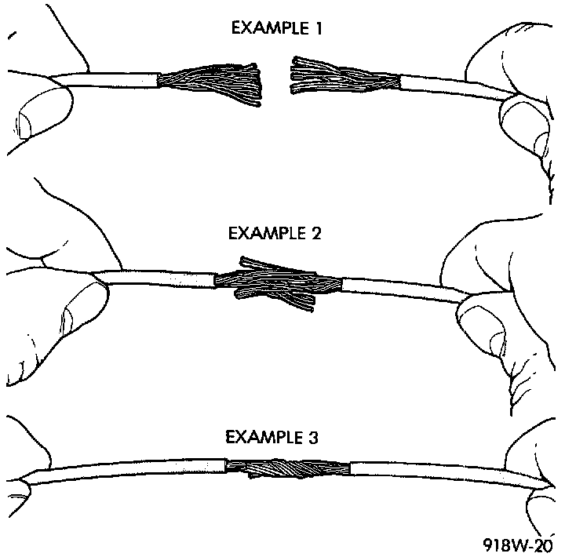

Wiring Repair
Wire Repair:

When replacing or repairing a wire, it is important that the correct gauge be used as shown in the wiring diagrams. The wires must also be held securely in place to prevent damage to the insulation.
1. Disconnect the battery negative cable.
2. Remove 1 inch of insulation from each end of the wire.
3. Place a piece of heat-shrink tubing over one side of the wire. Be sure the tubing will be long enough to cover and seal the entire repair area.
4. Spread the strands of the wire apart on each part of the exposed wires (Example 1).
5. Push the two ends of wire together until the strands of wire are close to the insulation (Example 2).
6. Twist the wires together (Example 3).
7. Solder the connection together using rosin core solder only. Do not use acid core solder.
8. Center the heat-shrink tubing over the joint and heat using a heat gun. Heat the joint until the tubing is tightly sealed and sealant comes out of both ends of the tubing.
9. Secure the wire to the existing ones to prevent chafing or damage to the insulation.
10. Connect the battery and test all affected systems.